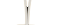
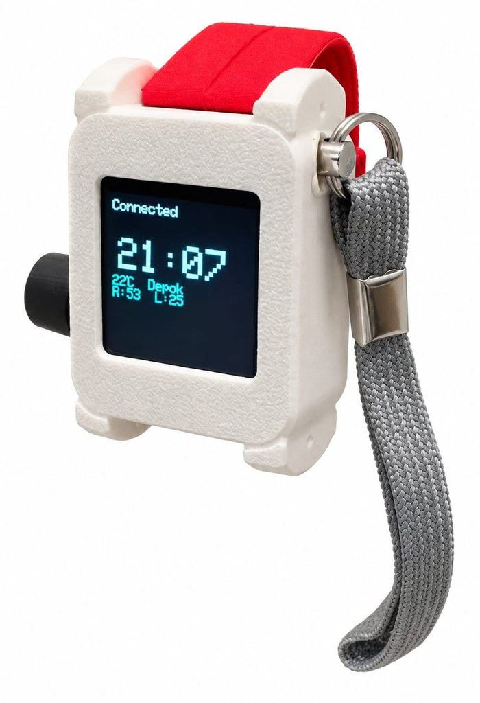

34,08 juta
penduduk Indonesia berusia 60 tahun ke atas, atau 11,97% dari total penduduk.
BPS, SUPAS 2025
Satu tarikan, bantuan datang. WatchOut! adalah jam tangan alarm darurat untuk lansia. Tarik talinya, sirene 100 dB langsung berbunyi dan terdengar hingga 100 meter, sehingga keluarga, perawat, atau tetangga segera tahu ada yang butuh pertolongan.


Coba tarik talinya Alarm berbunyi!
Geser tali ke bawah untuk mendengar bunyi alarmnya. Orang di sekitar hingga ±100 meter dapat mendengarnya.
Indonesia sudah memasuki masa penduduk menua. Semakin banyak orang tua kita yang beraktivitas dengan tubuh yang tidak lagi sekuat dulu: berjalan pelan, memakai tongkat, atau duduk di kursi roda.
Masalahnya, ketika mereka terjatuh atau dalam keadaan darurat, teriakan minta tolong sering tidak terdengar. Ponsel tertinggal di meja, tombol terlalu kecil, dan tangan gemetar. Setiap menit keterlambatan bisa memperburuk kondisi lansia yang sudah rentan.
34,08 juta
penduduk Indonesia berusia 60 tahun ke atas, atau 11,97% dari total penduduk.
BPS, SUPAS 2025
56,2%
lansia memiliki setidaknya satu kesulitan fungsional.
BKKBN & UNFPA, 2022
15,4%
lansia pernah jatuh, dan 37,9% di antaranya mengalami cedera.
BKKBN & UNFPA, 2022
7,44 juta
lansia diperkirakan kesulitan berjalan atau menaiki tangga.
Diolah dari BPS, SUPAS 2025
71%
kematian akibat jatuh terjadi pada lansia.
WHO
11,2%
cedera akibat jatuh pada lansia berujung disabilitas fisik.
Medical Journal of Soeradji
“Saya pernah terjatuh, udah teriak minta tolong tapi gak ada yang dengar. Akhirnya saya terlambat mendapatkan pertolongan dan harus di opname selama 8 hari di rumah sakit.”
Kami mewawancarai 20 responden, termasuk 13 lansia, serta enam lansia di Rumah Oma Nursing Home. Hampir semuanya memakai tongkat atau kursi roda, dan beberapa merasa sungkan untuk meminta bantuan.
WatchOut! adalah jam digital dengan tali penarik. Saat terjatuh atau dalam situasi darurat, lansia tidak perlu mencari ponsel atau menekan banyak tombol. Cukup tarik talinya, dan alarm kencang langsung memanggil keluarga, perawat, atau tetangga.
Bagi lansia, WatchOut! memberi rasa aman dan percaya diri untuk tetap beraktivitas di rumah dan sekitarnya. Bagi keluarga, WatchOut! memberi ketenangan saat harus meninggalkan orang tua sebentar untuk urusan lain.
Satu tarikan tali langsung membunyikan sirene lebih dari 100 desibel yang terdengar hingga 100 meter. Tidak perlu membuka kunci layar atau mencari ponsel.
Gelang silikon tahan cipratan, hujan, cuci tangan, hingga mandi. Tetap dipakai di kamar mandi dan saat tidur, tempat yang paling rawan kecelakaan.
Angka jam besar dan jelas, tali penarik mudah digenggam walau tenaga tangan terbatas, tanpa menu yang rumit.
Nyaman dipakai dari pagi sampai malam, sehingga perlindungan selalu ada di pergelangan tangan.
WatchOut! dirancang terhubung dengan aplikasi ponsel agar keluarga lebih mudah memantau.
Bukan sekadar alarm: ada jam digital dan fitur harian untuk menemani aktivitas setiap hari.
Tali menggantung di sisi jam, mudah diraih dan ditarik dengan tangan yang lain.
Suara keras terdengar hingga sekitar 100 meter dan langsung menarik perhatian orang di sekitar.
Keluarga, perawat, atau tetangga tahu ada yang butuh pertolongan dan bisa segera datang.
Geser model untuk memutarnya. Tekan Tarik tali untuk mendengar sirene dan melihat layar berubah menjadi tanda darurat.

Tampilan 3D belum bisa dimuat di perangkat ini, jadi kami tampilkan gambar produknya.
Pilih sudut pandang untuk melihat bagian-bagian penting jam ini.
Selain alarm darurat, WatchOut! membantu kegiatan sehari-hari. Pilih fitur untuk melihat tampilannya di layar jam.
09:41
Senin, 16 November
29°
Cerah berawan
26°C
Suhu sekitar
Jam digital dengan angka besar, lengkap dengan hari dan tanggal.
Rp289.000,00
per unit, satu jam WatchOut! lengkap dengan tali penarik alarm.
Beli sekarang| Pembanding |  | Smartwatch / fitness band | Panic button gantungan kunci |
|---|---|---|---|
| Cara minta tolong | Tarik tali, langsung bunyi | Layar sentuh dan menu yang rumit | Tombol tekan |
| Tahan air | Gelang silikon, aman untuk mandi & tidur | Bervariasi, sering dilepas saat mandi atau dicas | Jarang yang tahan air |
| Sinyal darurat | Sirene kencang 100 dB | Notifikasi di layar ponsel | Sirene intensitas rendah |
| Harga | Rp289.000 | Rp1.500.000 – Rp5.000.000 | Di bawah Rp100.000, mudah tertinggal |

Hubungi toko kami. Tim WatchOut! siap membantu memilihkan perlindungan untuk orang tua Anda.